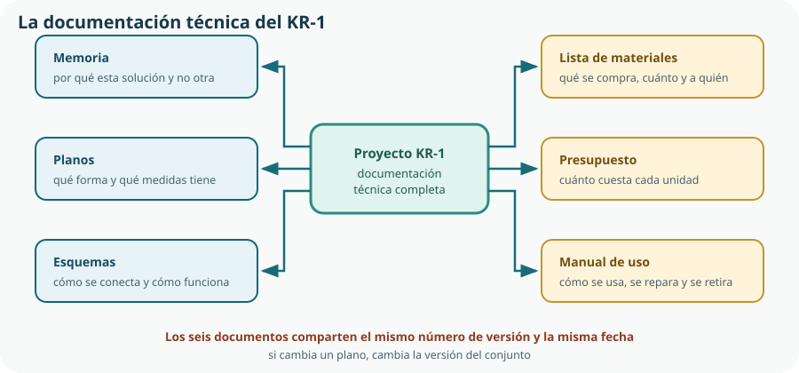

Este tema cierra el Bloque A y es donde se materializa la competencia específica 3: usar las herramientas digitales adecuadas, configurándolas según la necesidad, para resolver tareas y presentar resultados. Pero no trata de aprender programas: trata de que el trabajo del KR-1 quede en un estado en el que otras personas puedan continuarlo, comprobarlo y valorarlo. Un proyecto indocumentado no es un proyecto: es un recuerdo.
caja_final_v2_bueno_REVISADO.stl? Esa carpeta es el estado real de vuestra documentación, y explica por qué este tema existe.- elegir la herramienta digital adecuada a cada tarea del proyecto y configurarla para trabajar de forma autónoma;
- valorar la procedencia de una información, contrastar su veracidad y analizarla críticamente;
- organizar un espacio de trabajo compartido con convenciones de nombres, carpetas y permisos;
- llevar un control de versiones de los documentos de un proyecto y explicar para qué sirve;
- elaborar la documentación técnica de un proyecto: memoria, planos, esquemas, lista de materiales, presupuesto y manual;
- redactar con precisión, rigor y terminología adecuada, y referenciar las fuentes;
- respetar las licencias del material que utilizas y elegir una licencia para lo que produces;
- preparar y sostener una presentación técnica con guion, soporte visual y control del tiempo;
- responder preguntas técnicas con honestidad, incluida la respuesta «no lo sé, pero sé cómo averiguarlo».
1. Elegir y configurar las herramientas digitales
El criterio 3.1 evalúa resolver tareas «mediante el uso y configuración de diferentes herramientas digitales de manera óptima y autónoma». Las dos últimas palabras son las importantes: óptima significa que la herramienta encaja con la tarea, y autónoma, que sabes ajustarla y buscar cómo se hace algo sin que te lo expliquen.
| Tarea | Tipo de herramienta | Configuración que hay que ajustar |
|---|---|---|
| Buscar y guardar fuentes | Buscador con operadores y gestor de referencias o marcadores | Filtros de fecha y dominio; campos obligatorios de la referencia. |
| Redactar la memoria | Procesador de textos | Estilos de título, índice automático, numeración de figuras y tablas. |
| Calcular el presupuesto | Hoja de cálculo | Formato de moneda, referencias absolutas, validación de datos. |
| Dibujar y modelar | CAD y editor de esquemas | Unidades, tolerancia general, plantilla con cuadro de rotulación. |
| Programar el controlador | Entorno de programación | Placa y puerto, sangrado, guardado automático. |
| Planificar y seguir | Tablero o gestor de tareas | Columnas del flujo, responsables, fechas y avisos. |
| Compartir y versionar | Almacenamiento en la nube o repositorio | Permisos por persona, historial de versiones, carpeta de entregas. |
| Presentar | Editor de presentaciones | Patrón de diapositiva, tamaño mínimo de letra, exportación a PDF. |
Autonomía: cómo aprender un programa sin que te lo enseñen
- Busca la documentación oficial antes que un vídeo. Está actualizada, es precisa y usa el nombre real de cada opción.
- Aprende el vocabulario del programa. Si no sabes que lo que quieres se llama «restricción» o «extrusión», ninguna búsqueda funcionará.
- Prueba en una copia. Explorar un menú desconocido sobre el archivo bueno, sin copia de seguridad, es la forma más rápida de perder una tarde.
- Anota lo que descubras. Un archivo de notas del equipo con «cómo se hace X en este programa» ahorra a los demás el mismo rato que perdiste tú.
2. Procedencia, veracidad y análisis crítico
En el Tema 1 aprendimos a seleccionar fuentes para investigar. Aquí el problema es el inverso y más difícil: qué hacer cuando lo que encuentras parece correcto. La información técnica errónea rara vez es absurda; suele ser plausible, estar bien escrita y venir con una cifra concreta.
| Técnica | En qué consiste | Ejemplo en el KR-1 |
|---|---|---|
| Ir a la fuente primaria | Seguir la cita hasta el documento original, no quedarse en quien lo resume. | Un blog dice que la sonda consume 5 mA: comprobarlo en la hoja de características del fabricante. |
| Triangular | Buscar la misma información en dos fuentes independientes entre sí. | Necesidad de agua del cultivo según un servicio agrario oficial y según un manual técnico. |
| Comprobar el orden de magnitud | Preguntarse si la cifra es razonable antes de creerla. | «Riega 2 L por minuto» en un gotero: imposible; el gotero da unos litros por hora. |
| Medirlo | Cuando el dato es crítico y medible, se mide. | Consumo real del conjunto con un polímetro en lugar de sumar valores de catálogo. |
| Datar | Comprobar la fecha y si el componente o la norma siguen vigentes. | Un tutorial de 2016 usa una placa descatalogada y una biblioteca que ya no existe. |
3. Trabajo colaborativo y almacenamiento compartido
Un proyecto de cinco personas produce en doce semanas cientos de archivos. Si no hay una estructura decidida de antemano, el tiempo que se gana trabajando en paralelo se pierde buscando la última versión de algo.
Una estructura de carpetas que funciona
KR-1/
├── 00_gestion/ plan, actas, retrospectivas
├── 01_investigacion/ fuentes, hojas de características, medidas
├── 02_requisitos/ especificación y su estado
├── 03_diseno/
│ ├── cad/ modelos y ensamblajes
│ ├── planos/ PDF exportados por versión
│ └── esquemas/
├── 04_programa/ código del controlador
├── 05_fabricacion/ lista de materiales, parámetros, fotos
├── 06_ensayos/ actas de medida e informes de prueba
├── 07_entrega/ memoria, presupuesto, manual, presentación
└── 99_descartado/ lo que no se usa pero no se borraKR1_plano-escuadra_v03_2026-10-21.pdf. Cuatro piezas: proyecto, contenido, versión con dos dígitos y fecha en formato año-mes-día. La fecha así escrita ordena los archivos cronológicamente al ordenar por nombre, y la versión con dos dígitos evita que v10 aparezca antes de v2. Sin tildes, sin espacios y sin la palabra «final», que nunca lo es.Permisos: quién puede hacer qué
Edición
Solo el equipo. Cada persona con su cuenta: un archivo editado por «invitado» no tiene autoría y no se puede revisar.
Comentario
Para el profesorado o para quien revisa. Puede señalar sin modificar, y sus observaciones quedan registradas.
Lectura
Para la carpeta de entrega. Lo publicado no se toca: si hay que corregir, se sube una versión nueva.
Datos personales
Nunca se publican nombres, imágenes o datos de menores sin autorización. La normativa de protección de datos aplica también a un trabajo de clase.[1]
4. Control de versiones
Llamamos control de versiones a llevar el registro de cómo ha cambiado cada documento, quién lo cambió y por qué, de modo que se pueda volver atrás. En un proyecto técnico no es un lujo: es la única forma de responder a la pregunta «¿con qué plano se fabricó este lote?».
| Método | Cómo funciona | Adecuado para | Límite |
|---|---|---|---|
| Nombre de archivo | La versión y la fecha van en el nombre, y las antiguas se conservan. | Planos, PDF y documentos entregables. | Nadie sabe qué cambió entre v03 y v04 si no está anotado. |
| Historial del servicio en la nube | La plataforma guarda automáticamente los estados anteriores del archivo. | Memoria, hoja de cálculo, actas. | El historial suele caducar y no distingue un cambio importante de una corrección de tilde. |
| Sistema de control de versiones | Cada cambio se registra con autoría, fecha y un mensaje que lo explica; se pueden abrir líneas de trabajo paralelas y fusionarlas.[2] | El programa del controlador y los archivos de texto del proyecto. | Exige aprender unos pocos conceptos; con archivos binarios grandes es menos útil. |
5. La documentación técnica del proyecto
El criterio 1.4 pide elaborar documentación técnica «con precisión y rigor». El currículo enumera sus piezas: memoria, planos, esquemas, lista de materiales y presupuesto. Añadimos una sexta, el manual, porque sin ella el producto no se puede usar ni mantener.

Qué contiene cada documento
| Documento | Contenido mínimo | Extensión orientativa |
|---|---|---|
| Memoria | Necesidad, requisitos, alternativas estudiadas, solución elegida y su justificación, cálculos, resultados de los ensayos, conclusiones y referencias. | 10–20 páginas |
| Planos | Una hoja por pieza o conjunto, con vistas, cotas, tolerancias y cuadro de rotulación. | Una hoja por pieza |
| Esquemas | Eléctrico, electrónico, hidráulico y de control, con simbología normalizada y referencias de componente. | 1–4 hojas |
| Lista de materiales | Referencia, descripción, cantidad, proveedor, precio unitario y observaciones de cada elemento. | 1–2 páginas |
| Presupuesto | Materiales, mano de obra, amortización y costes indirectos; coste unitario y total, con hipótesis declaradas. | 1–2 páginas |
| Manual | Instalación, uso, advertencias de seguridad, mantenimiento, repuestos y retirada al final de la vida útil. | 1–4 páginas |
6. Redacción técnica: precisión, rigor y terminología
Escribir bien en ingeniería no significa escribir de forma elegante, sino de forma inequívoca. La misma frase no puede admitir dos lecturas, porque una de las dos producirá una pieza equivocada.
Impreciso
«La caja es bastante resistente y aguanta bien el agua.» No se puede comprobar, no se puede fabricar y no se puede discutir.
Preciso
«La caja, de PETG de 2 mm de pared, mantiene el grado de protección IP65 con la tapa atornillada.» Se puede comprobar, citar y rechazar.
Siete hábitos de la redacción técnica
- Un dato, una unidad. Nunca «pesa 340»; siempre «340 g». Y el símbolo de unidad va separado del número y sin punto final.
- Cifras significativas coherentes. No escribas 46,3847 € si el precio del filamento lo conoces con dos decimales.
- Voz activa y frases cortas. «Medimos el caudal con probeta y cronómetro» se entiende mejor que «se procedió a la realización de la medición».
- Terminología constante. Si es «sonda», es sonda en las veinte páginas. Alternar «sensor», «sonda» y «detector» obliga al lector a decidir si hablas de lo mismo.
- Separa hecho, interpretación y decisión. «El caudal medido fue 1,8 L/h (hecho); la pérdida en la línea explica la diferencia con el catálogo (interpretación); se aumenta la sección del tubo (decisión).»
- Numera y titula figuras y tablas, y refiérete a ellas por su número. Una figura que nadie menciona en el texto no hace falta.
- Referencia lo ajeno. Todo dato, imagen o afirmación que no hayas producido tú lleva su fuente, como vimos en el Tema 1.
7. Licencias, autoría y qué puedes reutilizar
La documentación de un proyecto incorpora material ajeno: una fotografía, un modelo 3D descargado, un fragmento de código, un símbolo. Citar la fuente responde a la honestidad académica, pero no resuelve el permiso: eso lo fija la licencia.
| Situación | Qué permite | Qué te obliga |
|---|---|---|
| Todos los derechos reservados | Nada sin permiso expreso del autor. | Pedir autorización o no usarlo. Una cita breve con fines docentes es la excepción, no la regla. |
| Licencia libre con atribución | Usar, modificar y redistribuir. | Nombrar al autor, indicar la licencia y señalar si lo has modificado.[3] |
| Licencia libre sin uso comercial | Usar y modificar con fines no comerciales. | Si algún día vendes el KR-1, ese material ya no te sirve. |
| Dominio público | Cualquier uso. | Nada legalmente; citar sigue siendo buena práctica. |
| Obra propia | Lo que decidas. | Elegir una licencia y escribirla, o quedará como «todos los derechos reservados» por omisión.[4] |
8. Presentar el proyecto
El criterio 1.5 pide comunicar «de manera eficaz y organizada» las ideas y soluciones, «empleando el soporte, la terminología y el rigor apropiados», y el 3.2, realizar la presentación con herramientas digitales adecuadas. Una presentación técnica no es un resumen de la memoria: es un argumento construido para un tiempo y un público concretos.
Un guion de diez minutos
Una frase con un dato: «el huerto se pierde cada verano porque nadie puede venir a regar tres semanas». Nada de introducción sobre la importancia de la tecnología.
El diagrama funcional del Tema 3. Quien lo vea debe entender el sistema completo antes del minuto dos.
Dos o tres, las que costaron: por qué sonda capacitiva, por qué válvula normalmente cerrada. Con el criterio, no solo el resultado.
Lo medido: caudal, consumo, tiempo de respuesta, agua ahorrada. Una gráfica, no una tabla de veinte filas.
Un fallo real y qué se aprendió. Es la parte que distingue un proyecto de un anuncio, y la que más se valora.
Coste, mantenimiento y la siguiente mejora priorizada. Cerrar mirando adelante, no pidiendo disculpas.
El soporte visual
Una idea por diapositiva
Si una diapositiva necesita dos minutos de explicación, son dos diapositivas.
Legible desde el fondo
Nada por debajo de 24 puntos. Si hay que reducir la letra para que quepa, hay que reducir el texto.
Imagen y esquema antes que texto
Tu diagrama funcional, tu plano, tu gráfica. La diapositiva apoya lo que dices; no lo repite por escrito.
Preparada para fallar
Exporta a PDF, llévala en dos sitios y ten claro qué contarías si el proyector no funciona. Ocurre.
9. Responder preguntas técnicas
El turno de preguntas es donde se comprueba si el proyecto es vuestro. No se trata de tener todas las respuestas, sino de responder como responde un ingeniero: con el dato si lo tienes, con la estimación si la tienes acotada y con la verdad si no tienes ninguna de las dos.
| Pregunta | Qué busca | Buena respuesta |
|---|---|---|
| «¿Cuánto consume?» | Un dato medido. | «28 mA en reposo y 310 mA con la válvula abierta, medido con polímetro el 14 de noviembre.» |
| «¿Por qué no usasteis una bomba?» | El criterio de decisión. | «La comparamos: ganaba en fiabilidad y perdía en coste y consumo. Está en la matriz de decisión, página 7.» |
| «¿Qué pasa si se corta la luz?» | Si habéis pensado en el fallo. | «La válvula es normalmente cerrada, así que el agua se corta. Lo probamos desconectando la alimentación.» |
| «¿Cuánta agua ahorra al año?» | Si distinguís lo medido de lo estimado. | «No lo hemos medido un año. Con el consumo de dos semanas de agosto, la estimación es de 3 a 4 m³, y así está declarado.» |
Comprueba lo que has aprendido
Este tema se demuestra con un paquete de documentación que otro equipo pueda usar y con una presentación que sostenga preguntas.
| Aspecto | Qué debes demostrar | Evidencias posibles |
|---|---|---|
| Herramientas y autonomía | Que eliges la herramienta adecuada y la configuras, sin depender de que te expliquen cada opción. | Memoria con estilos e índice automático, hoja de presupuesto con referencias absolutas, plantilla de plano propia, notas del equipo sobre el software. |
| Información contrastada | Que compruebas la procedencia, triangulas los datos críticos y declaras lo estimado como estimado. | Dosier de fuentes con fechas, un dato verificado en dos fuentes independientes, una medida propia sustituyendo un dato de catálogo. |
| Organización y versiones | Que la carpeta compartida tiene estructura, convención de nombres, permisos y versiones con motivo. | Árbol de carpetas, archivos nombrados según la convención, registro de cambios con fechas y razones. |
| Documentación técnica | Que los seis documentos existen, son coherentes entre sí y están redactados con precisión y con las fuentes citadas. | Memoria, planos, esquemas, lista de materiales, presupuesto y manual, todos con la misma versión, más la comprobación cruzada. |
| Comunicación | Que la presentación tiene guion, cabe en el tiempo, es legible y que respondéis preguntas con datos o con honestidad. | Guion con marcas de tiempo, soporte exportado a PDF, ensayo cronometrado y reparto de turnos por rol. |
Prueba final del bloque: entrega el paquete completo a otro equipo con una sola instrucción —«continuad el proyecto»— y anota cada pregunta que te hagan. Esa lista es la medida exacta de la calidad de vuestra documentación.
Glosario del tema
- Análisis crítico
- Valoración de una información atendiendo a su procedencia, su fecha, su intención y su contrastabilidad.
- Atribución
- Obligación de nombrar al autor y la licencia de un material reutilizado, e indicar si se ha modificado.
- Control de versiones
- Registro de los cambios de un documento con su autoría, fecha y motivo, que permite volver a un estado anterior.
- Convención de nombres
- Regla acordada para nombrar archivos de modo que se ordenen e identifiquen sin ambigüedad.
- Copia de seguridad
- Copia independiente y fechada de un conjunto de archivos, que no se sincroniza con el original.
- Dominio público
- Situación de una obra cuyos derechos de explotación han expirado o han sido renunciados.
- Fuente primaria
- Documento original donde se publicó por primera vez un dato o un resultado.
- Lista de materiales
- Relación de todos los elementos que componen un producto, con referencia, cantidad, proveedor y precio.
- Licencia
- Condiciones bajo las que el autor de una obra permite usarla, modificarla y redistribuirla.
- Manual
- Documento que explica la instalación, el uso, las advertencias de seguridad, el mantenimiento y la retirada del producto.
- Memoria
- Documento que justifica el proyecto: necesidad, requisitos, alternativas, solución elegida, cálculos, ensayos y conclusiones.
- Permiso de acceso
- Nivel de actuación concedido a una persona sobre un archivo o carpeta: lectura, comentario o edición.
- Presupuesto
- Documento que recoge y ordena los costes del producto y establece su coste unitario y total.
- Redacción técnica
- Forma de escribir que busca la interpretación única mediante precisión, unidades, terminología constante y separación entre hecho, interpretación y decisión.
- Registro de cambios
- Lista de modificaciones de un proyecto o documento, con fecha, descripción y motivo.
- Repositorio
- Almacén de archivos gestionado por un sistema de control de versiones.
- Triangular
- Comprobar una información en dos o más fuentes independientes entre sí.
Resumen esencial
- La competencia digital de esta materia no consiste en conocer programas, sino en elegir la herramienta adecuada a la tarea y saber configurarla de forma autónoma.
- Una herramienta por función, acordada por todo el equipo, vale más que la mejor herramienta que usan solo algunos.
- Contrastar es ir a la fuente primaria, triangular, comprobar el orden de magnitud, medir cuando el dato es crítico y datar lo encontrado.
- Una cifra sin origen, condiciones ni unidad de comparación no es un dato; un asistente de inteligencia artificial no es una fuente citable y su uso se declara.
- El trabajo compartido necesita estructura de carpetas, convención de nombres, permisos por persona y respeto a los datos personales.
- La nube no es una copia de seguridad: replica también los borrados. La copia real es independiente y fechada.
- Un control de versiones sirve si responde a qué había antes, quién lo cambió y por qué; el motivo del cambio es la parte que más se olvida y más vale.
- La documentación técnica son seis documentos con preguntas distintas —memoria, planos, esquemas, lista de materiales, presupuesto y manual— y una sola versión común.
- La memoria se organiza por problemas resueltos, no por sesiones; el relato cronológico va en un anexo.
- La coherencia entre documentos se comprueba antes de entregar: el esquema, la lista y el presupuesto deben decir lo mismo.
- La redacción técnica busca una sola interpretación posible: unidades siempre, terminología constante y separación entre hecho, interpretación y decisión.
- Citar no es lo mismo que tener permiso: el permiso lo fija la licencia, y lo que producís necesita una licencia explícita para poder ser reutilizado.
- Una presentación técnica es un argumento con guion, tiempo ensayado, una idea por diapositiva y un fallo real contado.
- En el turno de preguntas, un dato medido, una estimación acotada o un «no lo hemos medido, se averiguaría así» valen; una cifra inventada destruye todo lo demás.
Fuentes y recursos fiables
- [1] Agencia Española de Protección de Datos — Guía para centros educativos (PDF).
- [2] Chacon, S. y Straub, B. — Pro Git (libro completo en español). Conceptos de control de versiones.
- [3] Creative Commons. Licencias libres y condiciones de atribución.
- [4] Texto refundido de la Ley de Propiedad Intelectual (Real Decreto Legislativo 1/1996).
- [5] W3C Web Accessibility Initiative — Introducción a la accesibilidad (en español). Criterios aplicables a documentos y presentaciones.
- [6] Comisión Europea — Metodología PM² (en inglés). Plantillas de documentación de proyecto.
- [7] UNE — Asociación Española de Normalización. Normas de documentación y referencias bibliográficas (UNE-ISO 690).
- [8] Decreto 64/2022, de 20 de julio (BOCM). Currículo de Tecnología e Ingeniería I, criterios 1.4, 1.5, 3.1 y 3.2.